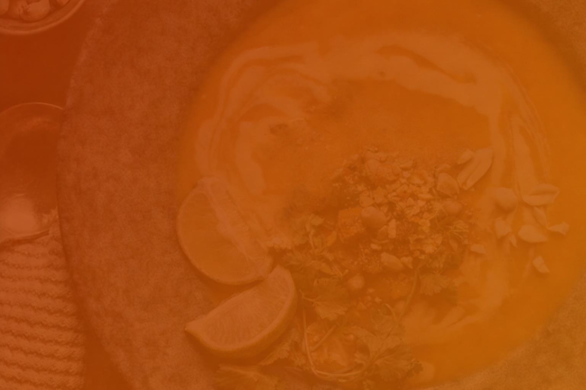

Öppettider
Måndagar Stängt.
Tis – Fre 11.00 – 20.00.
Lör – Sön 13.00 – 20.00.
Lunch (Tis – Fre) kl 11.00 – 14.00.
Beställningsstopp kan uppstå innan stängningstiden.
OBS! Stängda dagar: 23–25 dec, 31 dec, 1 jan.



Måndagar Stängt.
Tis – Fre 11.00 – 20.00.
Lör – Sön 13.00 – 20.00.
Lunch (Tis – Fre) kl 11.00 – 14.00.
Beställningsstopp kan uppstå innan stängningstiden.
OBS! Stängda dagar: 23–25 dec, 31 dec, 1 jan.
Tisdag till Fredag, 11:00 — 14:00.
(Röd curry, bambuskott, kokosmjölk, basilika och limeblad) + Thailändska Vårrullar.
(Gul curry, kokosmjölk, tomat, potatis och lök) + Friterad Kyckling i Sesamfrön.
(Panäeng curry, jordnötter, kokosmjölk, basilika och limeblad) + Kycklingspett.
(Röd curry, kokosmjölk, ananas, vattenkastanjer, minimajs, zucchini och limeblad) + Friterad Kyckling.
Priser: Kyckling 139:- / Biff 145:- / Räkor 149:-
Röd curry, bambuskott, kokosmjölk, basilika och limeblad.
Grön curry, aubergine, bambuskott, bönor, kokosmjölk, basilika och limeblad.
Panäeng curry, jordnötter, kokosmjölk, basilika och limeblad.
Massaman curry, potatis, grönsaker, kokosmjölk, jordnötter och rostad lök.
Gul curry, potatis, grönsaker, kokosmjölk och rostad lök.
Käeng kua curry, bambuskott, grönsaker, kokosmjölk, limejuice.
Starkt kryddad soppa med kokosmjölk, svamp, tomat, citrongräs, galanga, limeblad och limejuice.
Soppa med kokosmjölk, svamp, citrongräs, galanga, limeblad och limejuice.
Priser: Kyckling 139:- / Biff 145:- / Räkor 149:-
Chili, grönsaker, krapawblad, thailändska kryddor och ostronsås.
Bambuskott, paprika, creme fraiche, basilika och limeblad.
Chili olja, bambuskott, blandade grönsaker och thailändska kryddor.
Gul curry, blandade grönsaker, kokosmjölk och cashewnötter.
Blandade grönsaker, ostronsås och thailändska kryddor.
Blandade grönsaker, ananas, tomatpuré och sötsursås.
Ingefära, blandade grönsaker, Kina svamp och thailändska kryddor.
Stekta risnudlar, ägg, grönsaker, jordnötter, citron och koriander.
Stekta risnudlar, soja, broccoli, thailändska kryddor och ägg.
Stekta ris med ägg, soja, thailändska kryddor och grönsaker.
Kycklingspett med jordnötssås.
Friterad kyckling i sesamfrö med sweetchilisås.
Med sweetchilisås.
Med sweetchilisås.
Med sweetchilisås.
Med sweetchilisås.
Priser: Kyckling 139:- / Biff 145:- / Räkor 149:-
Bambuskott, svamp, lök och thailändska kryddor.
Paprika, lök, purjolök, basilika.
Blandade grönsaker och thailändska kryddor.
Ananas, grönsaker och thailändska kryddor.
Blandade grönsaker, vitlök och thailändska kryddor.
Blandade grönsaker, ananas, rödvin och sötsursås.
Blandade grönsaker, thailändska kryddor, chiliolja.
Blomkål, paprika, majs, bönor, lök, purjolök och starksås.
Blomkål, paprika, morötter, majs, lök, purjolök.
Vegetarisk – I nästan alla rätter kan vi ersätta kött med tofu.
Ris och sallad ingår i samtliga rätter (ej nr. 15 och 16).
“Supergod lunch och väldigt trevlig personal. Riktigt prisvärt och alltid fräscha smaker. Ett självklart val när man vill ha thai i Kalmar.”
“Litet och enkelt ställe, men maten är fantastisk. Rejäla portioner och riktigt goda smaker. Perfekt både för lunch och take away.”
“Riktigt god thaimat och bra priser. Portionerna är stora och smakerna sitter som de ska. Ett av de bättre alternativen i stan.”
Beställ enkelt för avhämtning eller hemleverans via våra partners nedan.
Esplanaden 6A
392 53 Kalmar
Måndagar: Stängt
Tis—Fre: 11:00 - 20:00
Lör—Sön: 13:00 - 20:00
OBS! Stängda dagar: 23-25 dec, 31 dec, 1 jan.